Em 2024, o Cemitério da Igreja Assunção de Nossa Senhora, em Araucária — PR, foi visitado para localizar o túmulo de Bárbara — encontrado, com a lápide inscrita em ucraniano. Clique em qualquer imagem para ampliar.
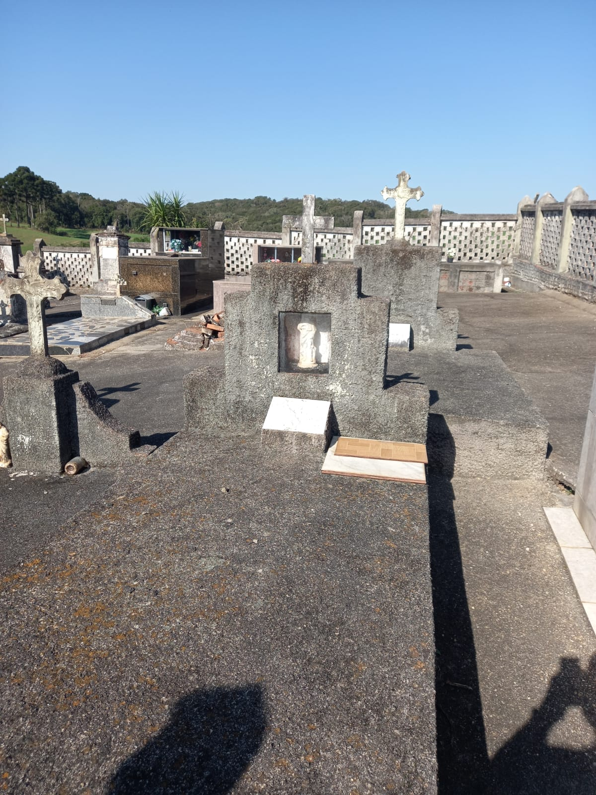
Cemitério · AraucáriaTúmulo de Bárbara, no Cemitério da Igreja Assunção de Nossa Senhora, Colônia Ipiranga.
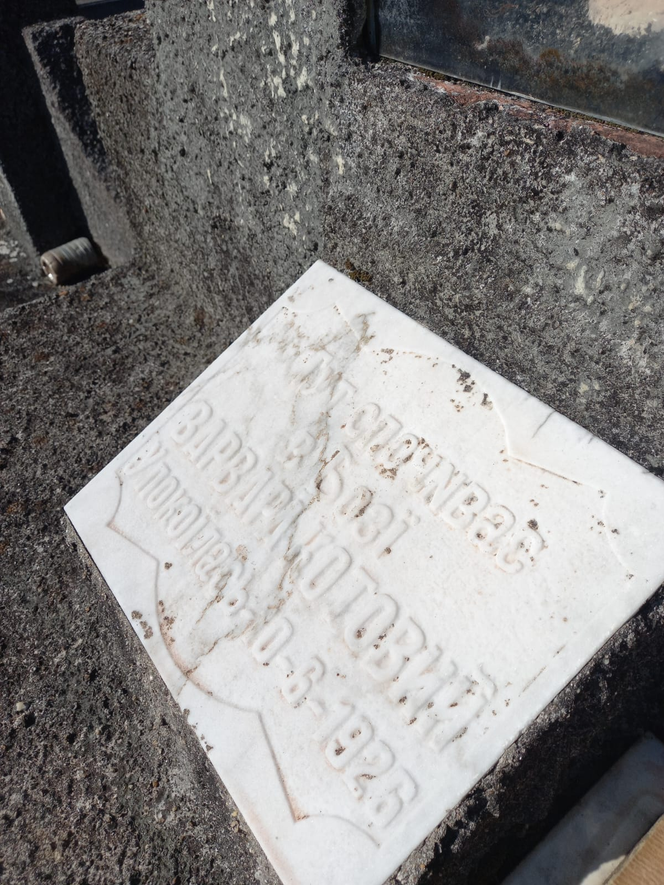
LápideInscrição em ucraniano: ВАРВАРА КОТОВИЙ.
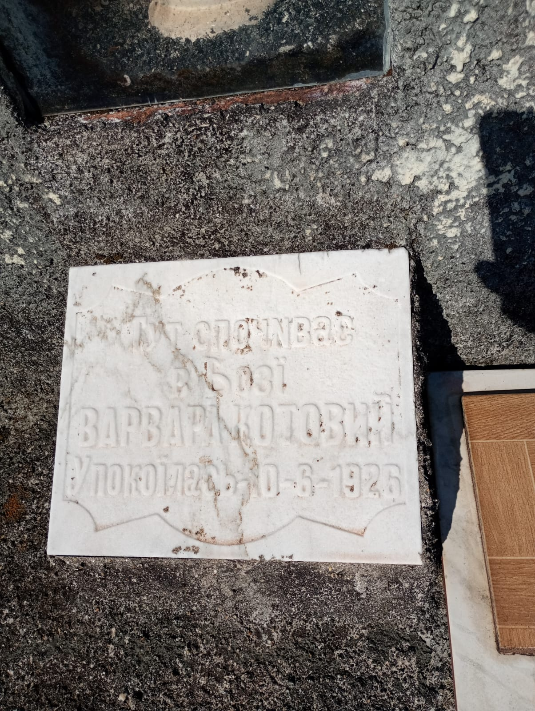
Lápide · detalheVisão central da inscrição.
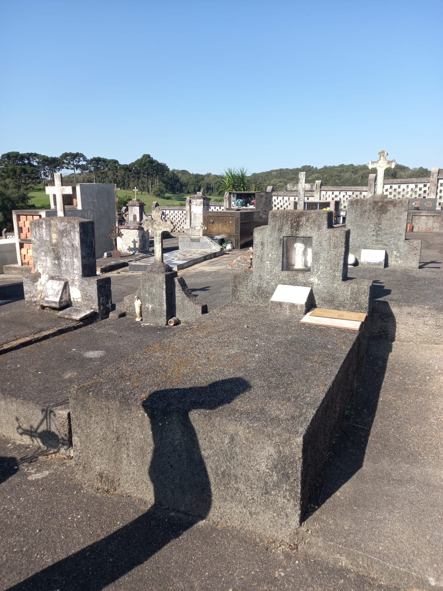
Cemitério · AraucáriaTúmulo de Bárbara — ângulo complementar.
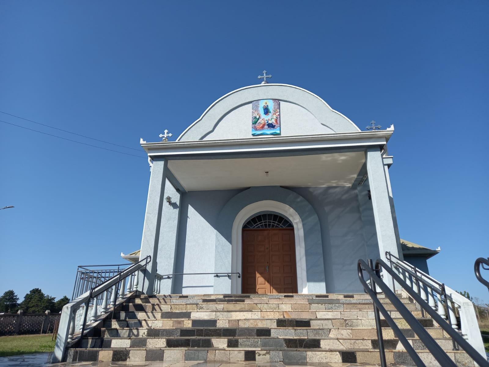
Igreja Assunção de N. Sra.Centro da comunidade ucraniana de Araucária desde a imigração.
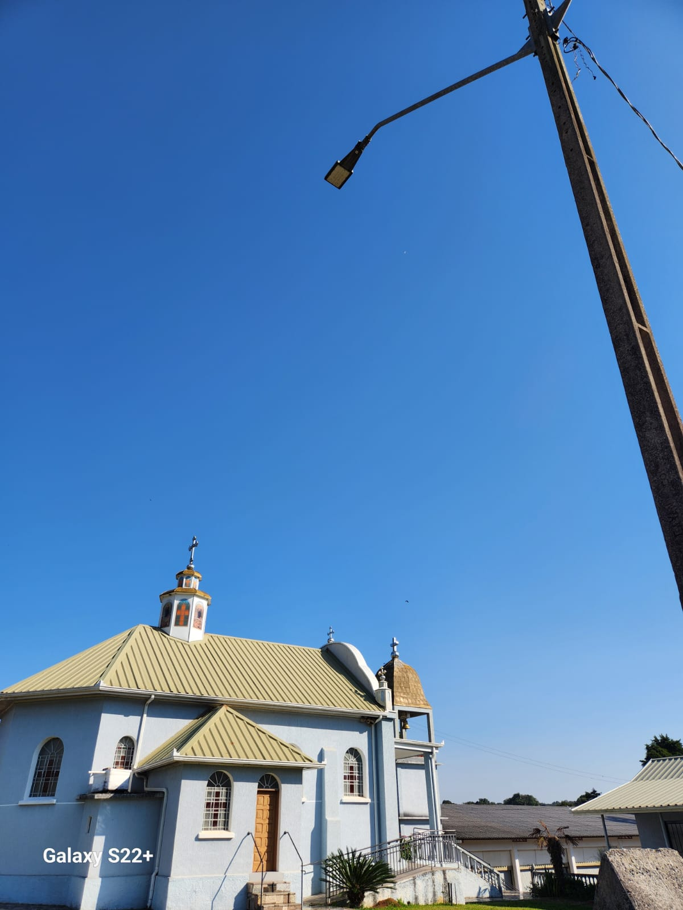
Igreja · lateralGuajuvira, Araucária.
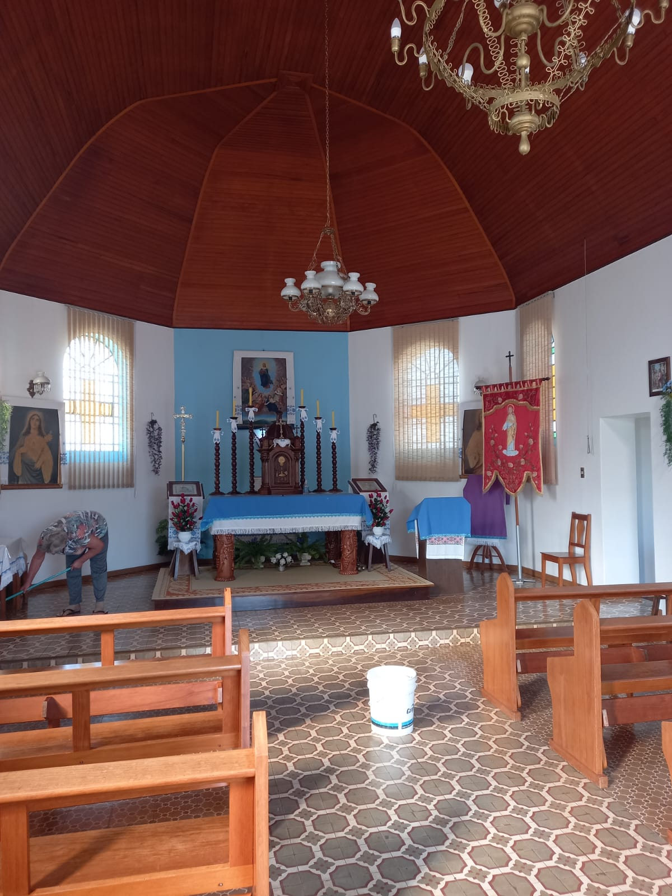
Igreja · interiorInterior da Igreja Greco-Católica Ucraniana.
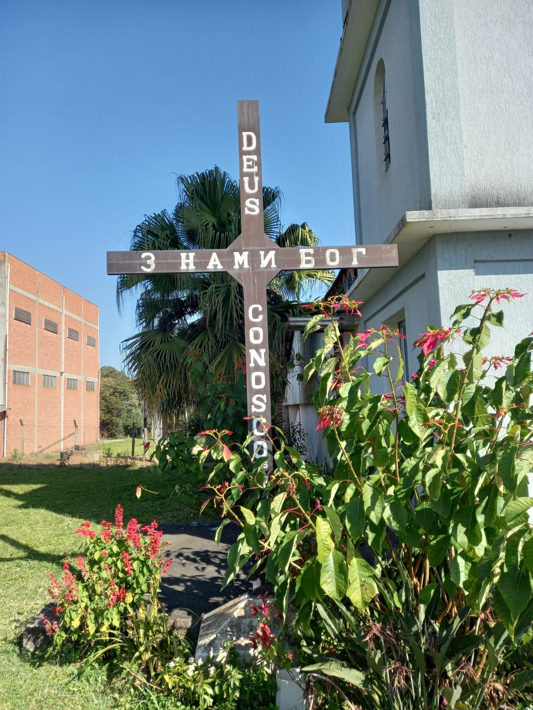
DetalheCruz da igreja.
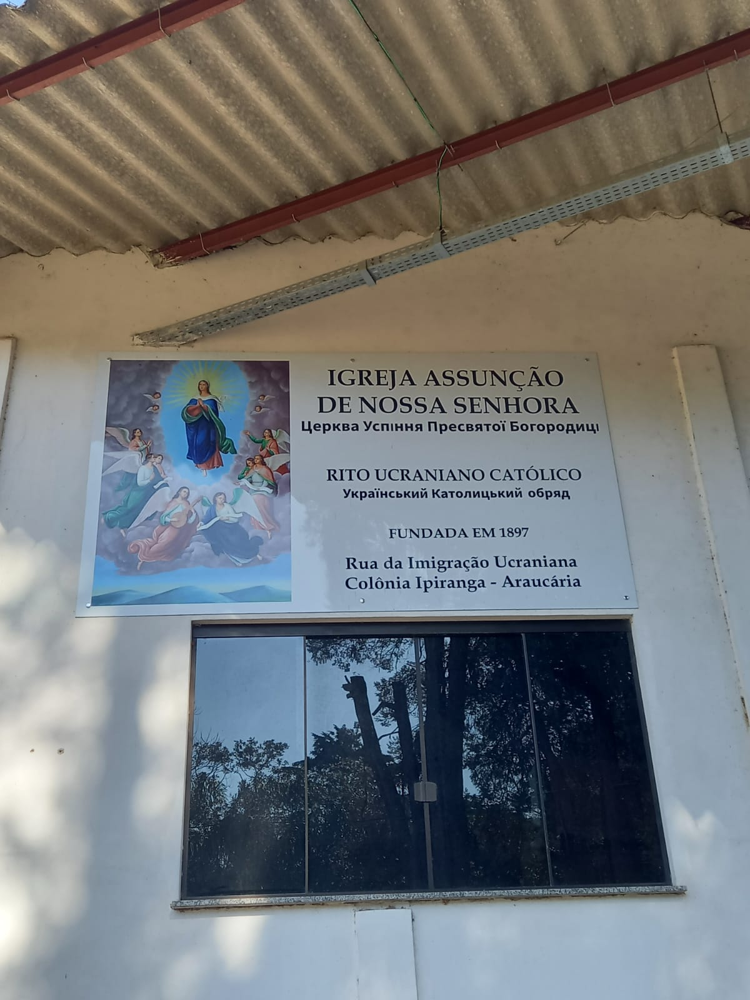
PlacaIdentificação atual da igreja.
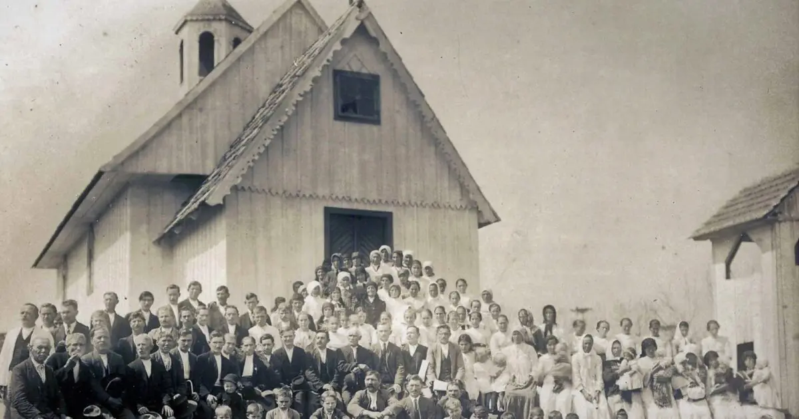
Arquivo históricoRegistro antigo da igreja.
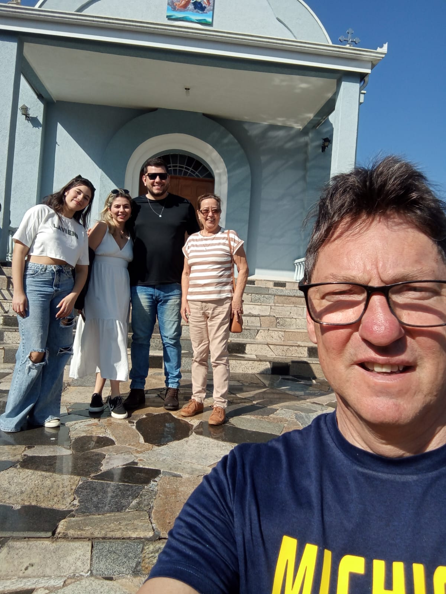
Visita · 2024Família diante da Igreja Assunção de Nossa Senhora, em Araucária.